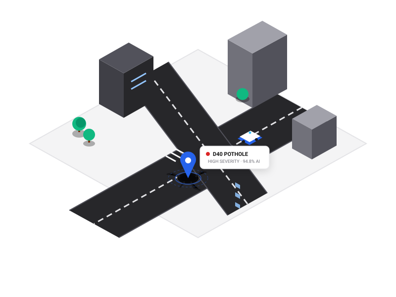

Empowering Communities with Intelligent Road Infrastructure
CivicSight connects citizens directly with municipal repair teams using computer vision AI to detect, prioritize, and accelerate road damage remediation.

Urban Infrastructure 3DThe CivicSight Workflow
From initial citizen discovery to final road repair verification in 7 seamless stages.
Report
Citizens photograph road hazards and upload location data seamlessly from any mobile browser.
Detect
YOLO-powered deep learning models classify road defects across D00, D10, D20, and D40 categories.
Prioritize
Automated severity scoring ranks high-impact damage and critical transit corridors first.
Verify
Municipal engineers validate damage assessments and estimate repair scopes efficiently.
Assign
Work orders and geolocation markers are dispatched directly to field maintenance crews.
Repair
Field crews conduct asphalt repair, pothole filling, or resurfacing operations.
Close
Post-repair photos confirm resolution, updating citizens and closing the maintenance cycle.
Modular Architecture
Built for citizen transparency and municipal operations efficiency.
Citizen Damage Reporting
An intuitive interface for quick road hazard submission with photo upload, detailed descriptions, and structured location placeholders.
Municipal Operations Center
Interactive geospatial Leaflet heatmap, automated severity triage (Red/Amber/Green), crew dispatching, and resolution auditing tools.